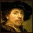

parent nodes: Intro1StartingAWiki | Intro3Formatting | Intro5Indexing
Intro Rembrandt van Rijn
Back
 Rembrandt Harmenszoon van Rijn (July 15, 1606 – October 4, 1669) was a Dutch painter and etcher. He is generally considered one of the greatest painters and printmakers in European art history and the most important in Dutch history. His contributions to art came in a period that historians call the Intro Dutch Golden Age.
Having achieved youthful success as a portrait painter, his later years were marked by personal tragedy and financial hardship. Yet his drawings and paintings were popular throughout his lifetime, his reputation as an artist remained high and for twenty years he taught nearly every important Dutch painter. Rembrandt's greatest creative triumphs are exemplified especially in his portraits of his contemporaries, self-portraits and illustrations of scenes from the Bible. The self-portraits form a unique and intimate biography, in which the artist surveyed himself without vanity and with the utmost sincerity.
In both painting and printmaking he exhibited a complete knowledge of classical iconography, which he molded to fit the requirements of his own experience; thus, the depiction of a biblical scene was informed by Rembrandt's knowledge of the specific text, his assimilation of classical composition, and his observations of the Jewish population of Amsterdam. Because of his empathy for the human condition, he has been called "one of the great prophets of civilization".
For the rest of this article see Wikipedia: http://en.wikipedia.org/wiki/Rembrandt
A painting Rembrandt is most famous for is the "Nachtwacht"
previous: Back
parents: Intro1StartingAWiki, Intro3Formatting, Intro5Indexing
[alias: IntroRembrandtVanRijn]